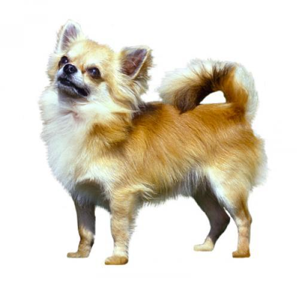

Чихуахуа (довгошерстий)
Довгошерстий чихуахуа, що за розмірами нагадує іграшку, має гладку або трохи хвилясту шерсть різних кольорів: від палевого до чорного. Вуха обрамляє бахрома з довгих волосків, навколо шиї — довгий ворс, а задні лапи повинні бути з пачосами. Граціозні і компактні дорослі собаки мають зріст 15–23 см і важать 1,8–2,7 кг.
- Я власник з величезним досвідом
- Потрібно елементарного дресирування
- Enjoys gentle walks
- Любить гуляти півгодини щодня
- Невиражена слинотеча
- Дуже галасливий собака
- Сторожовий пес. Гавкає та попереджає про небезпеку
- Прекрасний сімейний собака
Походження
Деякі вважають, що чихуахуа — це результат схрещення собаки течічі з маленькою голою собакою з Азії. Чихуахуа — штат у Мексиці, і саме з цього штату сучасного чихуахуа вперше привезли до Америки. Теоретично вважається, що сучасна порода з'явилася у результаті схрещення вже вимерлої породи течічі з маленькими собаками з Мексики, Аризони та Техасу.
Риси характеру
Довгошерстий чихуахуа дуже прив'язується до одного або двох людей, з якими він буде допитливим, жвавим та розумним, а також дуже і постійно ласкавим. Однак без достатньої ранньої соціалізації порода не буде доброзичливо ставитись до незнайомців і може виглядати нервовою, «дуже балакучою» і навіть різкою. Собак чихуахуа потрібно якнайшвидше соціалізувати, інакше вони будуть відчувати тривогу і стрес в нових умовах і не уживатимуться з незнайомцями, дітьми та іншими домашніми тваринами. Ця порода замкнута у своєму колі, їм подобається бути з іншими чихуахуа.
Здоров'я
Як і багато інших маленьких порід, чихуахуа може страждати на хвороби колінних чашечок, які можуть тимчасово зісковзнути з місця (вивих наколінника), мати проблеми з трахеєю. Через форму голови вони схильні до надмірної кількості води в мозку (гідроцефалія) та деяких захворювань очей.
Вправи
Довгошерстий чихуахуа може пристосуватися до будь-якої кількості вправ, але в межах розумного. У чихуахуа, як правило, трапляються сплески енергії, коли вони завзято грають. Але їм непотрібно багато гуляти — достатньо півгодини на день. Рекомендується, щоб чихуахуа носили джгут замість нашийника через слабкість трахеї.
Грумінг
Для чихуахуа процедура грумінгу не буде складною. Довгошерстий чихуахуа потребує доброго розчісування щіткою і гребінцем раз на тиждень. «Нагрудник» або комірець довшої шерсті може потребувати миття, оскільки до нього можуть чіплятися залишки їжі. Чихуахуа теж линяють, але ці малі собаки не скидають багато шерсті. Дуже корисно для чихуахуа чистити їм зуби щодня, оскільки, як і всі малі породи, вони схильні до значних відкладень зубного каменю.
Харчування
Мініатюрні собаки мають швидкий метаболізм, а це означає, що вони дуже швидко спалюють енергію. При цьому через свої маленькі шлунки вони повинні їсти небагато, але часто. Для малих порід спеціально розробляється харчування з належними рівнями ключових поживних речовин і шматочками меншого розміру, які підходять для їхнього невеликого рота. Це також сприяє жуванню і покращує травлення.